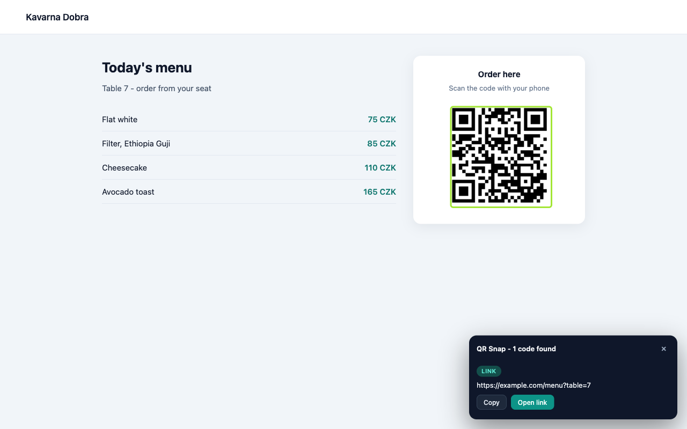
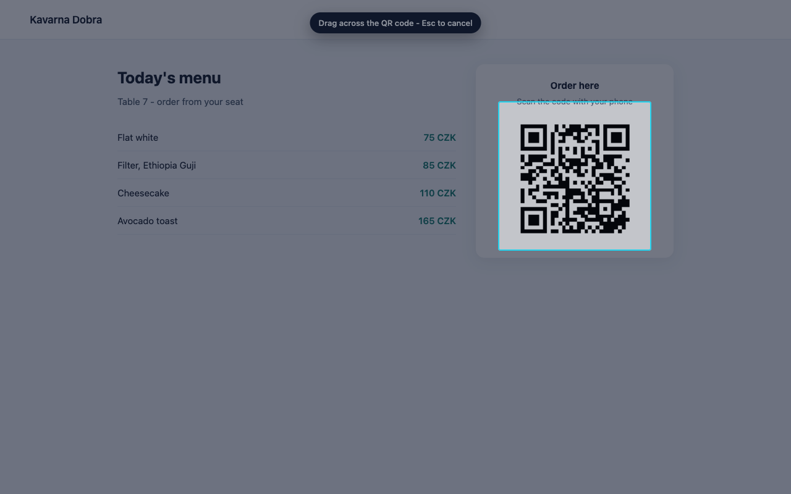
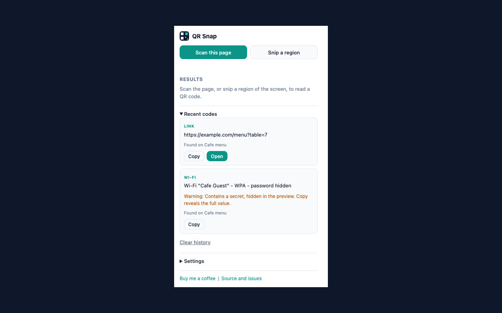

QR Snap
A Chrome extension that reads QR codes already on your screen. No phone, no camera, no upload - it screenshots the tab you are on, decodes what it finds, and checks whether the link is safe before you open it.
What it does
- Scan this page - decodes every QR code on the visible tab, optionally scrolling through the whole document, and outlines what it found.
- Snip a region - drag a rectangle over anything on screen, including a canvas, a PDF preview or a video call, and read the code inside it.
- Recognises links, Wi-Fi cards, contacts, calendar events, email, phone, SMS, locations and authenticator codes.
-
Warns about plain http, look-alike host names, raw IP addresses and
user:password@hostphishing links before you open anything.



Privacy in one line
Nothing leaves your browser. Decoding happens locally, there is no account, no analytics and no server. Full text in the privacy policy.